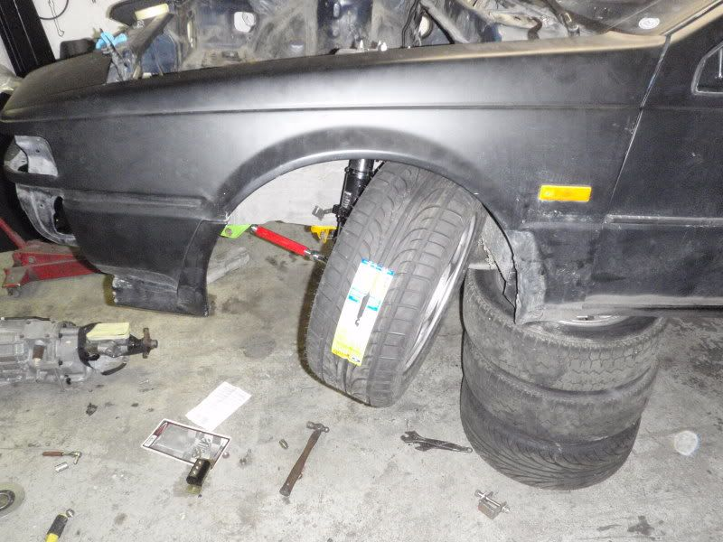

-
STOCK
The stock Z31 inner tie rod. It comes in two lovely forms, Kouki and Zenki:
viewtopic.php?f=2&t=21091
HISTORY
Up until now, there were no performance aftermarket inner or outer tie rods available for the Z31 within the US. Other's looking for more angle and more strength have tried S13/S14 tie rod spacers (direct bolt in), or using a combination of S13/S14 inners and outers. With either combination of S13/S14/Z32 parts, cutting down threads on the inner was required.
Adding Angle: viewtopic.php?f=2&t=11140
A slight addition to angle can be achieved by adding 6mm S13/S14 steering spacers and removing the 2mm black plastic ring. Adding more spacers than this will be unsafe thread engagement length within the rack. However, at this point the outer will hit the LCA and also cause a slight bind. As I tested, notching the LCA allows for more angle, but the steering over centers and binds instantly.
SHAMWOW
Here is a look at the worn out stock components. Steering angle is limited when the inner tie rod flat face contacts the steering rack housing:
1012.jpg
I called Kuah at SPL with dimensions. He supplied me with a Tein 350Z inner tie rod, and S13/S14 SPL outer tie rod ends. This kit allows for a healthy adjustment range, for both Kouki and Zenki cars. I would argue that these are the strongest components on the market right now, and SPL parts has amazing service. Note the bumpsteer adjustment spacers provided in the kit:
103
104
The Tein inner rods came with 6mm rack spacers, which I gleefully installed. Angle was increased, but outer tie rod would contact LCA before rack travel stopped. This gives kind of awkward steering feel, and puts an awful lot of stress on the tie rods. Here is the angle achieved: Compare to above stock picture (taken at same camera positions)
1056.jpg
I thought about stopping here, especially since my 275 width tires were mm's from the frame rail of the car. Eventually I just said fuck that and cut off my LCA's more:
1078.jpg
The problem with this setup is the over centering of the outer tie rod end. Basically, when you turn to lock, the outer joint crosses over the axis of the steering rack. Now when you turn back the other direction, the rack tries to push the tie rod harder into the LCA. Essentially the steering locks up.
The solution to this over centering problem is to create/mod a steering knuckle with less Ackerman angle. Here are the stock knuckles:
109x.jpg
I have an extra set of knuckles to mod. Perhaps I will give it a go this summer. Its a simple cut and weld really, but would need a jig to ensure Left and Right come out the same. For now I am running stock steering angle :-(
EDIT UPDATE:
Steering angle seems alright, only a bit more than stock. I have removed the black plastic rings, and notched the LCA's to allow further clearance. However, an LCA bump stop for the rod end is needed to prevent "chatter" at lock. My tires were rubbing the rails:Last edited by Z_Karma; 03-04-2020, 08:35 PM. Reason: uploaded images to z31 server from offsite host, edited links."produce first.talk second." -
Nice effort dude, thanks for sharing.My Build Thread -
I'm drooling…
I wrap my paper weights in glitter. -
so when are you going to actually use all of these goodies?

1988 300zxt. gt35, stance, etc. Wheels: Varrstoen ES2 18x9.5 et-13 225/40. 18x10.5 et0 245/40
1990 jetta vr6'd -
are you asking me or mike?
I wrap my paper weights in glitter. -
haha mike, sorry for confusion.
well, maybe you too :P
1988 300zxt. gt35, stance, etc. Wheels: Varrstoen ES2 18x9.5 et-13 225/40. 18x10.5 et0 245/40
1990 jetta vr6'd -
Great information mike.
Big help with the pictures as well.86na - BlueZ
Shiro #366 - Kouki Monster
85t - Mr Tickles -
I am really interested in this setup since I am probably going to have to replace my tie rods in order to pass inspection.
I am not really too concerned with adding more angle, instead really tightening up the steering and making it more responsive. On the SPL website they have the Z32 inner tie rods for "grip or street use." If I combined the Z32 inners and SPL outers, would I experience any of the issues with the LCA you are running into, or is that just because of your suspension setup? I am on Illuminas/ST springs.
Thanks for the info and awesome thread! -
As the post states, you will need Z33 Tein inner tie rods, and SPL S13/S13 outers. This is the combination which provides the proper lengths and adjustment for the Z31 chassis. If you do not add the steering angle spacers, this is literally a bolt on upgrade. It's also a great way to reduce the added bumpsteer incurred from lowering the car.MrKaira wrote:
If I combined the Z32 inners and SPL outers, would I experience any of the issues with the LCA you are running into, or is that just because of your suspension setup? I am on Illuminas/ST springs."produce first.talk second." -
Really good info here Mike. It looks like you cut straight to the chase and spoke with one of the best of the best. Kuah is everything suspension for the Z32 and Z33 and his time attack Z32 is simply awesome. I'm lucky enough to get to see it frequently at events and track days.545 RWHP & 540 RWTQOriginally posted by Andrew84zx
tell her your car is so fast it will make her panties fly off

-
Awesome! Thanks for the info, that's exactly what I was looking for.Mike_GruiZinga wrote: As the post states, you will need Z33 Tein inner tie rods, and SPL S13/S13 outers. This is the combination which provides the proper lengths and adjustment for the Z31 chassis. If you do not add the steering angle spacers, this is literally a bolt on upgrade. It's also a great way to reduce the added bumpsteer incurred from lowering the car. -
Next time we go to the Gambler House, we need to sneak out to the garage and copy the ackerman on Simba's Awesometron 5000 knuckles.sigpic -
You need this:
To do this:

Talk about steering angle :nanan?re1984 Hardtop Z31NA2T: Angrily decomposing due to lack of motivation
1986 Z31NA: Dead and gone -
Oh geez that just looks like it would break with enough forward momentum.P.1.M.P. wrote: You need this:
Talk about steering angle :nanan?re545 RWHP & 540 RWTQOriginally posted by Andrew84zx
tell her your car is so fast it will make her panties fly off
-
Are those a different factory style knuckle or are they shortened? I can see a seam, but it's not too clear in that pic…irony.cc


Copyright © 2006–. All rights reserved. Privacy Policy